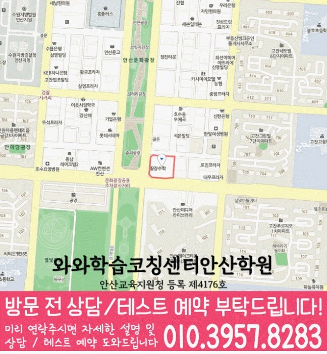

30초 핵심 안내
고잔동 고등 영수학원 선택 전 확인할 기준
경기 안산시 고잔동의 고등 영수학원 정보로서 고잔동 고등 영수학원은 영어·수학 진단, 학교 일정 반영, 복습과 재풀이 기준을 설명합니다. 주소는 경기 안산시 단원구 광덕대로 130 폴리타운 B동 513호이며, 학습부진에 관해 학부모가 물어볼 질문도 제시합니다. 특정 성적 상승이나 입시 결과는 고잔동 페이지에서도 단정하지 않습니다.
High School English & Math
고잔동 고등 영수학원 페이지에서 고3 영어·수학 학습 우선순위, 시험 대비, 질문·과제·오답 피드백, 학습부진 상담 기준을 살펴봅니다. 지역은 경기 안산시 고잔동, 안내 주소는 경기 안산시 단원구 광덕대로 130 폴리타운 B동 513호입니다.
30초 핵심 안내
경기 안산시 고잔동의 고등 영수학원 정보로서 고잔동 고등 영수학원은 영어·수학 진단, 학교 일정 반영, 복습과 재풀이 기준을 설명합니다. 주소는 경기 안산시 단원구 광덕대로 130 폴리타운 B동 513호이며, 학습부진에 관해 학부모가 물어볼 질문도 제시합니다. 특정 성적 상승이나 입시 결과는 고잔동 페이지에서도 단정하지 않습니다.
수업 안내 이미지

센터 위치 안내

경기 안산시 고잔동에서 고잔동 고등 영수학원을 찾는 학부모에게 먼저 드릴 답은, 영어와 수학을 한 묶음으로만 관리하기보다 과목별 약점을 따로 진단한 뒤 한 주 계획에서 다시 연결해야 한다는 점입니다. 이번 페이지의 기준 학생은 고3이며, 영어 구문을 끊어 읽는 습관이 아직 자리 잡지 않은 학생이고 수학 쉬운 문제는 풀지만 조건이 길어지면 접근을 미루는 학생이며 평소에는 부모의 점검이 있을 때만 플래너를 작성하는 편입니다. 학습부진도 광고 문구만 보지 말고 실제 수업·관리 절차를 질문해야 하며, 아래에서는 수행평가 과제가 늘어난 주간에 무엇부터 확인할지 구체적으로 설명합니다.
고잔동 고등 영수학원 선택은 성적대가 아니라 현재 막히는 장면에서 시작해야 합니다. 이 페이지의 고3 학생은 영어 구문을 끊어 읽는 습관이 아직 자리 잡지 않은 학생이자 수학 쉬운 문제는 풀지만 조건이 길어지면 접근을 미루는 학생이며, 평소 부모의 점검이 있을 때만 플래너를 작성하는 경향이 있습니다. 고잔동 고등 영수학원이 이 학생에게 맞으려면 영어와 수학의 진단 결과가 따로 나오고, 수업 뒤 질문·오답·복습이 하나의 기록으로 이어져야 합니다. 경기 안산시 고잔동 학부모는 “부모 확인 없이도 학생이 다음 행동을 정할 수 있게 만들기”의 실행 가능성을 첫 달에 살펴보십시오.
고잔동의 고등 영어 관리에서 필요한 것은 많이 읽는 습관과 정확히 읽는 훈련의 균형입니다. 영어 구문을 끊어 읽는 습관이 아직 자리 잡지 않은 학생은 지문 수를 늘리면 피로만 커질 수 있으므로, 고잔동 고등 영수학원 상담에서 한 문장을 어떻게 끊고 한 문단을 어떻게 요약하는지 직접 확인받는 편이 좋습니다. 어휘는 당일·며칠 뒤·일주일 뒤로 반복하고, 독해 오답은 정답 근거와 오답 배제 근거를 함께 쓰며, 고잔동 학생은 내신 범위를 보지 않고 말해 보는 회상 단계까지 가야 합니다.
고잔동 고등 영수학원의 고등 수학 관리가 이번 고3 학생에게 맞으려면 풀이 과정이 기록으로 남아야 합니다. 수학 쉬운 문제는 풀지만 조건이 길어지면 접근을 미루는 모습은 답만 채점해서는 원인이 보이지 않으므로, 고잔동 수업에서는 문제를 읽고 무엇을 구하는지 말하기, 사용할 개념을 고르기, 식을 세우기, 검산하기를 차례로 확인하는 편이 좋습니다. 매주 새 진도와 누적 복습의 비율을 정하고, 고잔동 학생은 시험 전에 섞인 문항을 제한 시간 안에 풀어 전환 기준까지 연습해야 합니다.
고잔동의 시험 대비는 시험 직전 문제량을 늘리는 방식보다 날짜에서 거꾸로 단계를 나누는 편이 효율적입니다. 고잔동 고등 영수학원에서는 초반에 개념과 학교 범위를 확인하고, 중간에는 영어 변형·서술형과 수학 유형·풀이형을 연습하며, 마지막에는 제한 시간과 검토 순서를 점검하는 흐름이 필요합니다. 이번 고3 학생처럼 부모의 점검이 있을 때만 플래너를 작성하는 경향이 있다면 매주 완료율을 확인해 분량을 줄이거나 옮기고, 시험 뒤에는 점수보다 오답 원인을 먼저 분류해야 합니다.
경기 안산시 고잔동의 이 자료에는 특정 학교명이 제시되지 않았습니다. 따라서 고잔동 고등 영수학원을 알아볼 때는 고잔동 학생의 재학 학교와 시험 자료를 먼저 확인하고, 영어 교과 범위와 수학 단원 범위를 따로 전달해야 합니다. 학교 이름을 추정해 넣는 것보다 최근 시험지의 감점 지점, 수업 프린트, 수행평가 일정을 바탕으로 계획을 세우는 편이 정확하며, 고잔동 학생의 자료와 함께 확인합니다.
학습부진에 대한 답은 한 문장 광고보다 확인 가능한 절차에서 나옵니다. 경기 안산시 고잔동 고등 영수학원을 비교할 때는 계획표 작성보다 미완료 이유를 분석하고 다음 주 분량을 조절하는 과정까지 보는 것을 기준으로 삼고, 점검 주기마다 목표와 방법을 수정하는지와 학생이 스스로 다음 행동을 말할 수 있는지를 메모해 두십시오. 고잔동 상담에서 조건이 모호하면 다시 서면으로 확인해야 하며, 학습 의욕을 자극하는 말만으로는 습관이 유지되기 어려우므로 작은 행동과 점검 시점을 구체적으로 정해야 합니다.
경기 안산시 고잔동 고등 영수학원 관련 방문 위치는 경기 안산시 단원구 광덕대로 130 폴리타운 B동 513호로 안내되어 있습니다. 고잔동 학부모가 상담 전에 확인할 항목은 실제 수업 시간표, 시작 가능한 반, 비용 구성, 보강 방식, 학부모 피드백 주기입니다. 학생은 최근 영어 지문과 수학 오답을 가져가 직접 설명해 보는 것이 좋고, 상담자는 어떤 자료를 왜 선택하는지 고잔동 상담에서도 말할 수 있어야 합니다. 설명을 들은 뒤에는 바로 등록하기보다 지속 가능성을 고잔동 가정의 생활표와 함께 검토하십시오.
FAQ
고잔동에서 영어 구문을 끊어 읽는 습관이 아직 자리 잡지 않은 학생과 수학 쉬운 문제는 풀지만 조건이 길어지면 접근을 미루는 학생처럼 과목별 원인이 다른 경우, 영어와 수학을 따로 진단하고 주간 계획에서 연결하는 방식이 필요합니다. 고잔동 고등 영수학원이 적합한지는 반 이름보다 진단 근거, 질문 시간, 오답 재풀이, 과제 조정 기록으로 판단하는 편이 좋습니다.
경기 안산시 고잔동 고등 영수학원 상담에서는 영어에 필요한 짧은 반복과 수학에 필요한 긴 집중 시간을 다르게 배정해야 합니다. 두 과목 모두 완료율·정확도·오답 원인·다음 점검일을 남기되, 분량까지 똑같이 맞추지 않는 것이 고잔동 학생 관리의 핵심입니다.
고잔동 학생의 최근 시험지, 현재 교과서와 부교재, 학교 프린트, 수행평가 일정, 일주일 시간표를 준비하는 것이 좋습니다. 경기 안산시 고잔동 상담에서는 영어 서술형 감점과 수학 풀이형 감점을 따로 확인하고, 시험 범위 공지 전후의 계획이 어떻게 달라지는지 물어보십시오.
학습부진에 대해서는 점검 주기마다 목표와 방법을 수정하는지를 먼저 묻고, 답변이 학생의 실제 수업과 기록에 어떻게 적용되는지 확인해야 합니다. 고잔동 고등 영수학원의 설명이 모호하면 적용 조건, 담당자, 점검 시점, 변경 절차를 다시 질문해 같은 기준으로 비교하는 편이 좋습니다.
제공 주소는 경기 안산시 단원구 광덕대로 130 폴리타운 B동 513호입니다. 고잔동에서 이동 가능한 요일과 시간을 실제 생활표에 넣어 본 뒤, 운영 시간, 수강료, 반 정원, 교재비, 결석·보강 기준처럼 변동 가능한 정보는 방문 전 별도로 확인하십시오.
Parent Perspective
※ 다음 글은 고잔동 고등 영수학원 페이지 구성을 위한 학부모 관점의 예시 문안이며, 특정 학생의 실제 경험이 아닙니다. “최근 시험지만 보는 대신 평소 시간표와 오답 흔적까지 함께 살펴보는 방식이 고잔동 상담에서 도움이 되었습니다. 고잔동에서 학원을 비교할 때 영어·수학 수업 횟수만 봤는데, 이번에는 복습 간격과 질문 처리까지 확인했습니다. 학습부진도 적용 범위를 메모해 두니 과장된 기대 없이 우리 아이에게 필요한 조건을 정리할 수 있었습니다.”